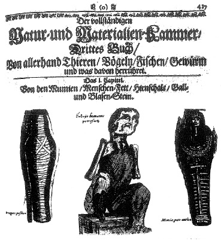

ŞEKİL 42. Hekim Michael Bernard Valentini’nin (1657-1720)
bir eserinden, mumya konulu resimli bir sayfa.88
Christoph Wirsung’un (1500-1571) 1592 tarihinde yayımlanan ilaç kitabına göre mumiya, kemik kırığına karşı hazırlanacak bandajda bulunması gereken maddelerden biri idi. Keza gülsuyu içinde mumiya tozu, yeni bir kırık olayının ortaya çıkmasını önlemek için 2-3 ay boyunca yemeklerden önce alınmalıydı. Paris Bilimler Akademisi üyesi kimyacı ve eczacı Dr. Nicolas Lémery (1645-1715), birkaç yüz yıl öncesine kadar Mısır’da mumyalama işinin sürdürüldüğünü göstermiş, Dictionnaire universel des drogues simples, contenant leurs noms, origines, choix, principes, vertus, étimologies, et ce qu’il y a de particulier dans les animaux, dans les végétaux et dans les minéraux (Basit İlaçların Evrensel Sözlüğü) [ya da Traité universel des drogues simples (Basit İlaçların Evrensel İncelemesi)] (Paris, 1698) başlıklı malzeme konulu ansiklopedik sözlüğünün 1721 yılında yeniden basılan nüshasında Eski Mısır mumyalarının yüzyıllar boyu koruma sağlarken, son dönem mumyalarında uygulanan çabaların o kadar başarılı olmadığı belirtilmiştir. Dr. Johannes Schröder’in (1600-1664) ünlü farmakopesinin 1746 tarihinde Nürnberg’de yeniden basılan nüshasında şunlar önerilmektedir: “Yapay olarak hazırlanmış mumiyayı ardıç yağı, terebentin yağı ve dolama otu yağı ile iyice karıştır, bir imbik içinde hepsini damıt. Bu yolla elde edilen ‘liquor’ (sıvı) ve balsam, belsoğukluğuna iyi gelir”. Johann Heinrich Zedler’in (1706-1751), kısaca Universal-Lexikon (Evrensel Sözlük) (Cilt 1-64, Halle ve Leipzig, 1732-1754) adıyla bilinen eserinde ise mumiyanın akrep sokması durumlarında ağızdan alındığında ya da tereyağı üzerine konup yendiğinde iyi geleceği; ayrıca “keçi sütü ile birlikte içildiğinde mesane, böbrek, penis rahatsızlıklarını ve çiş tutamama durumlarını iyileştireceği” belirtilmektedir.88
Mısır’da sürekli olarak mezarların yeniden kazılması sonucu çok sayıda mumya yok edildikten sonra 16. yüzyılda Mısırlılar, atalarının cesetlerinin kutsallığına saygısızlık yapıldığı gerekçesiyle direnişte bulunarak mumya ticaretini yasaklamışlar, bunun üzerine İskenderiye’de etkinlik gösteren tüccarlar bu konuda geri adım atarak “mumiya” malzemesini, yalnızca idam edilen ve yabancı halktan olan kişilerin taze cesetlerini çöl kumları altına gömerek elde etmeye başlamışlardır. Bunun yanı sıra çok sayıda esmer tenli Mağripli’nin ölü bedenleri de hızlıca kurutulup öğütülerek eczanelerin yolunu bulmuştur. Ünlü Fransız gezgin Pierre Pomet’nin (1658-1699) 1694 yılında Le marchand sincère ou traité géneral des drogues simples et composées (Açık Yürekli Tüccar ya da Basit ve Karışım İlaçların Genel İncelemesi) başlığı altında yazdığı ve 1717’de Der aufrichtige Materialist und Specerey-Händler (Dürüst Aktar ve Baharat Tüccarı) başlığı altında Almanca’ya çevrilen kitabında, gerçek mumyaların yanı sıra “Gabbora” diye adlandırılan sahte ve değersiz mumyalar da sergilenmiştir. Yine aynı eserde, Ölü Deniz’den elde edilen Yahudiye ziftinin, bitümden ibaret olduğu belirtilmiştir. Bu ve benzeri açıklamalar, mumiyayı ilaç olarak kullanımdan vazgeçirmeye başlamıştır. “Mumiya” paketleri 19. yüzyıla gelene kadar tüm büyük eczanelerin raflarında yer almıştır. Mumya tozu 19. yüzyılda düşük miktarlarda ve daha çok resim sanatında pigment olarak kullanılmıştır. 20. yüzyılda yine de Almanya’nın Darmstadt kentindeki Merck ecza şirketinin 1910 tarihli fiyat listesinde “Mısır mumiyası (mumya tozu): 1 kilosu 12 Altın Mark” şeklinde, 1924 tarihli fiyat listesinde ise “Mumiya vera Aegyptica” (Gerçek Mısır Mumiyası) yine aynı fiyatla yer almıştır.88, 91
Avrupa’ya mumya ticareti ile ilgili başka bir gelişme, 19. yüzyıl ortalarında kâğıt üretimi ile ilgili olarak yaşanmıştır. Kâğıt üretimi için paçavra sağlanmasında güçlük yaşanması üzerine kimi parlak zekâlı girişimciler, kâğıt hammaddesi olarak Eski Mısır mumyalarına göz diktiler. Buna göre her bir mumya, yaklaşık olarak 30 Pfund (~15 kg) keten bezi ile sarılmıştı ve Mısırlılar kutsal saydıkları boğa, kedi, ibis (karaleylek, Mısır turnası) ve krokodillerini de keten bezinden sargılarla mumyaladıklarından, bunlar da değerlendirilebilirdi. ABD’de 1 Pfund paçavra 4-6 Cent tutuyordu ve mumya bezleri, 1 Pfund’u 3 Cent’e sağlanabilir ve bu öneri uygulamaya geçirilebilirdi. Burada mumya bezlerinden kâğıt üretimi düşüncesi, hiç de yeni bir düşünce değildi. 1140 yılında Bağdat’ta bir hekimin bildirdiğine göre: “Bedeviler ve fellâhlar (çiftçiler), içinde ölülerin sarılı olduğu bez sargıları bulmak üzere nekropolleri (ölüler kenti) arıyor ve eğer bu kefen bezleri artık kullanılamayacak durumda iseler, bunları, gıda pazarı için gerekli kâğıdın yapılacağı değirmenlere satıyorlardı”.92
“Mumiya” tozunun her tür hastalığa iyi geldiği ve en güçlü afrodizyak olduğu düşünülüyor ve bu amaçla ya yutularak içiliyor ya da merhem haline getirilerek cinsel organlara sürülüyordu. Gerçek Mısır mumya tozunun ilaç olarak kullanımı üzerine bilgiler, 18. yüzyılda Johann Georg Krünitz (1728-1796) tarafından yayımlanan Oekonomisch-technologische Encyklopädie, oder allgemeines System der Staats-, Stadt-, Haus- und Landwirthschaft und der Kunstgeschichte... (Ekonomi-Teknoloji Ansiklopedisi, ya da Devletçilik, Şehircilik, Ev Ekonomisi ve Tarımın ve Sanat Tarihinin Genel Sistemi...) (242 cilt; 1773-1858) adlı ünlü ansiklopedide de şu sözlerle yer almaktadır: “... Ondan yapılan tentür, mumyanın reçinemsi özelliklerini taşır ve 12 ilâ 24 damlalık dozlar halinde kullanılır. Tüccarlardan bunu satın alacak ilaç yapımcılar ve eczacılar, cesedin etli kısımlarından iri parçalar almaya çalışmalı, asla çıplak kemikler almamalı ve sınamak için ondan küçük bir parçayı kızgın kömür üzerine attığında güçlü ama zift benzeri olmayan bir koku vermelidir. Koku ne denli güzel ve reçinemsi ise, mal o denli değerli demektir...”. Rusya’da mumya tozunun ilaç olarak kullanımının, ünlü romancı Lev Nikolayeviç Tolstoy (1828-1910) tarafından “gelişmeyi sağlayıcı ilaç” olarak propagandası yapılmıştı.
Günümüzde bile kayaç-mumiya, öncelikle Orta Asya’da (örneğin Özbekistan ve Tacikistan’da) olmak üzere, dışsal ve içsel olarak ilaç şeklinde kullanılmaktadır. Yüzeysel ve derinlemesine oluşmuş iltihaplı deri hastalıklarında, örneğin kan çıbanında ve apselerde, ayrıca da eklem rahatsızlıklarında daimî bandajlar halinde kullanılmaktadır.87 Bitüm bizde aktarlarda “karasakız” adıyla satılmakta ve özellikle çıban tedavisinde kullanılmaktadır.
Mumya tozunun acı bir tadı ve keskin bir kokusu vardır. Mumya tozu suda çözünür ve geride çözünmeyen çok az zerrecik kalır. Alkolde çözünmez. 19. yüzyılda mumya tozunun amonyak çözeltisi, organik çözücüler ya da eterik yağlarla özütlenmesi sonucu hazırlanan tentürler, literatürde “mumiin” adı altında yer almıştır. Kimyasal açıdan mumya tozu, organik ve anorganik maddelerin doğal bir karışımıdır. İçinde 26 çeşit mikroelement, 10 çeşit metal oksit, ayrıca amino asitler, steroidler, fosfolipidler, bir dizi vitamin, eterik yağlar ve başkaca biyolojik etken maddeler bulunmaktadır. Öte yandan mağaraların duvar ve tavanlarında damlataş ya da küçük sarkıtlar halinde biriken bu tür petrokimyasal ürünler, gözyaşını andıran şeklinden ötürü Doğu’da “dağların gözyaşları” diye adlandırılırken, İngilizce’de “mumio” terimi ile nitelenmişlerdir.
“Mumya-mum-balmumu” sözcükleri arasındaki ilişkiler konusunda yukarıda yapılan açıklamaların uzantısında muma benzer balsam şeklindeki maddeler ile tahnit edilmiş ceset arasındaki bağlantı, olasılıkla bizzat baldan kaynaklanmaktadır. Klasik çağda Yunanlılar ve Eski İskitler, ölülerin bedenini korumak için baldan yararlanıyorlardı. Makedonya İmparatoru Büyük İskender’in (İÖ 356-323; yön. İÖ 336-323) cesedinin de bal dolu bir fıçı içinde Babil’den Mısır’a getirildiği söylenir.4 Bu konuda, arı kovanında yaşanan doğal bir mumyalanma olayından da söz edelim. Arı kovanına bir fare girse, arılar onu sokarak hemen öldürürler. Ama farenin gövdesi arıların taşıyamayacağı kadar büyük olduğu ve evlerinde kokmasını istemedikleri için, onu kovan malzemesi olan reçineleri ile mumyalarlar!93 Meyankökü özü (“licorice”) ile arıların kendilerini hastalıklara karşı korumak için kovanlarını sıvadıkları ve aynı zamanda bir gıda maddesi olan “propolis”, mumya tozu karışımlarında yer alan özel maddelerdir. Mumyalama işlemi sırasında reçinemsi maddeler kategorisinde kullanılmış olan balmumundan kaynaklanabilecek “propolis” katkısının, Eski Mısır mumyacılığında bilinçli olarak kullanılıp kullanılmadığına ilişkin çağdaş incelemeler sürmektedir.
Mumya tozunun başka bir önemli kullanım alanı, 16. yüzyıl ortasından itibaren Avrupa’lı ressamlar tarafından boya pigmenti ya da bağlayıcı olarak kullanılmasıydı. Özellikle sır-altı boyamalarda ya da astar boya olarak çok tutuluyor ve “mumie”, “mumian”, “momie”, “Mumia vera”, “Mumia aegyptiaca” gibi adlar veriliyordu. Çikolata rengindeki bu hammadde, yağlı boya tablolarda, resmin korunmasına yönelik bir bağlayıcı olarak kullanıldığı gibi 1925 yılına dek ressamların boya paletinde “Mumienbraun” (mumya kahverengisi) ya da “Mumie, echt” boya örneği de yer almıştır. Ünlü İtalyan ressam Cennino d’Andrea Cennini (1370-1440) Il libro dell’ arte o trattato della pintura (Zanaatkârın Elkitabı) (~1437) adlı eserinde “mumia”dan söz eder. Günümüzde etik nedenlerden ötürü mumyanın tıpta kullanımı kabul edilmemektedir.